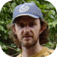

Computer Engineering degree from the State University of Campinas - UNICAMP, (1996). M.Sc in Artificial Inteligence from the Federal University of Rio Grande do Sul - UFRGS, (1999). After 1999 he worked for 2 years in telecommunication, smart card and telephone voice portals. Since the beginning of 2002 until the end of 2004 he worked at CRIA as a software developer in biodiversity informatics. His areas of interest include static and dynamic species modelling, artificial neural networks, celular automata, genetic algorithms and geographical information systems.
openModeller development areas: Main developer and system architecture designer. Implementation of distance algorithms and command-line interface. Mauro is the original developer of openModeller.
Received his B.Sc. degree in Mechanical Engineering from the Aeronautics Institute of Technology (ITA, 1993, Brazil). Since then has been working with software development at local consulting companies. Currently employed by CRIA being part of the team who has set up the first Brazilian network connecting distributed databases from biological collections (speciesLink).
openModeller development areas: Current library maintainer. Developed the SOAP interface (modelling service), implemented the SVM and AquaMaps algorithms, helped in the implementation of other algorithms, participated in the openModeller Desktop development, made many improvements and bugfixes in the framework.

He studied his Masters Degree in Geography at the University of Stellenbosch, South Africa where he majored in GIS and Environmental Studies. He has worked in South Africa, England and Brazil on various projects specialising in developing applications for biodiversity inventory and analysis.
openModeller development areas: original openModeller Desktop developer. Also helped in many parts of the library, such as developing the CSM algorithm and making the Mac OSX and Ubuntu packages.
openModeller development areas: Implementation of the GARP algorithms and the SWIG interface. Also developed the original VC++ Win version. Participated in the original design of the system.
Performed general code review, making many improvements during the first releases of the library. Implemented the serialization/deserialization mechanism and finished the SWIG Python interface.
Migrated the build process to automake/autoconf. Created the original RPM package specification.
Added support for MAC OS X.
Completed a PhD at the University of Reading in 2003 entitled "Modelling the global distribution of Legume species in past, present and future climates".
openModeller development areas: Developement and testing of openModeller Desktop (version 0 and 1).
openModeller development areas: Integrated TerraLib IO functionality within the library and developed a TerraView plug-in for openModeller. Currently involved in openModeller Desktop development and maintenance.
openModeller development areas: Implementation of the Environmental Distance algorithm which includes different distance metrics (Euclidean, Gower and Mahalanobis).
Albert is a student at Escola Politécnica da Universidade de São Paulo. Albert is a Computer Engineering student and is interested in data mining using self organising maps. He is working on openModeller as part of his bachelors degree course.
openModeller development areas: Implementation of a testing framework for openModeller library in order to improve the reliability of our code base.
Biologist, PhD in Science (Environmental Engineering) by the University of São Paulo in 2005, entitled "Use of Ecological Niche Modelling to assess the geographical distribution patterns of Plant species".
openModeller development areas: Participated in the initial planning and definition of user requirements of openModeller. Continuously helps testing all different versions. Portuguese translator of the openModeller Desktop.
Cheng-Tao is a graduate student of school of forestry and resource conservation, National Taiwan University. He is interested in vegetation analysis, phytogeography, and evolution of plants.
openModeller development areas: Traditional Chinese translator of the openModeller Desktop, helped with FreeBSD suppport and made other contributions to the openModellerDesktop development.
Developed the pre-analysis API and implemented the chi-square technique. Improved pseudo-absence generation.
Implemented the Artificial Neural Networks algorithm. Helped implementing the jackknife pre-analysis.
Implemented the Maxent algorithm.
Helped implementing the Artificial Neural Networks algorithm.
Enabled integration with Condor in the modelling server.
Implemented the pre-analysis interface in openModeller Desktop.
Implemented the ENFA algorithm.
Ported openModeller to OpenBSD.